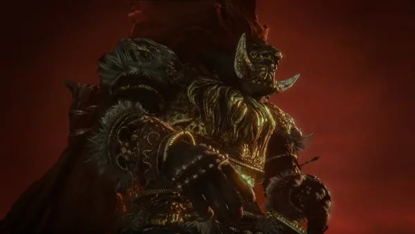
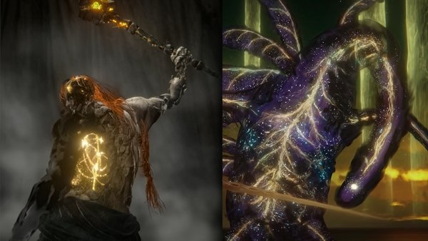
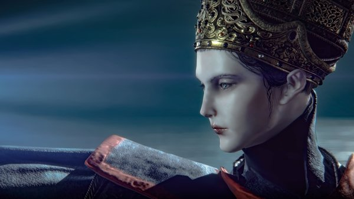

Legendary Characters

Radahn
The famed Red Lion, turned into a mindless beast. Highly regarded for his strength and skill over gravity.

Malenia
The One-Armed Valkyrie. Her attacks are graceful and deadly, as if she is dancing. Her true power lies within the Rot inside of her.

Radagon
The reanimated remains of Radagon, the Second Elden Lord, who wished to repair the shattered Elden Ring.

Rennala
The Last Queen of Caria. A powerful sorceress, even in an illusion.